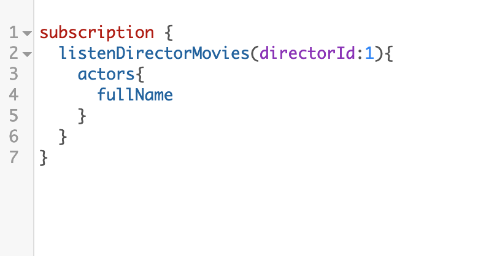

Chapter 3 The GraphQL Playground
3.1 Introduction
Once the server is up and ready we can interact with our API by making use of the GraphQL Playground.
Just open ohttp://localhost:9001/graphql in your browser.

GraphQL playground
Queries are written on the left side and the response of these are displayed on the right one.
To check the API documentation we just need to click on the green button on the right (SCHEMA) and a handy menu will be shown.
3.2 GraphQL syntax
GraphQL operations are: queries, mutations and subscriptions. We can run only one operation per request.
On the other hand we can send more than a query or more than a mutation at time.

Queries with alias

Mutations

Subscriptions
3.3 Challenges
- Write a query that returns the below details (getMovie) for movie with id 1.

Edward Scissorhands
How many actors are returned from the server?
Are the returned fields the same ones that appear in the picture?
- Create a new director (addDirector)
- Subscript to the movies for the created director in the previous step. (listenDirectorMovies)
- Open another tab in your GraphQL Playground and add a new movie in which the director is the one that you just created. (addMovie).
- Verify that new movie has been notified to the subscription that we launched in step 3.